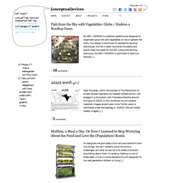
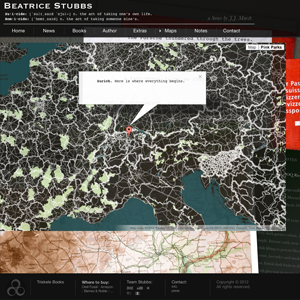
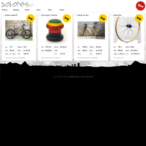
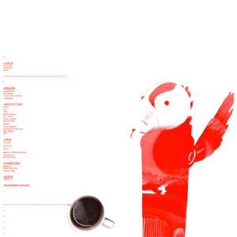
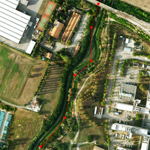

Modeling & Visualization / Web Design / Graphic Design / Research / AboutContact
- Conceptual Devices Website (2010)
 Nuance Words Website Mockup (2011)
Nuance Words Website Mockup (2011)- Beatrice Stubbs Website (2012)
- Dolores Cycles (2012)
- Life Lessons (2012)
- sn.labna.net (2001)
- Start Social Website Mockup (2010)
- Naviganavile (2012)